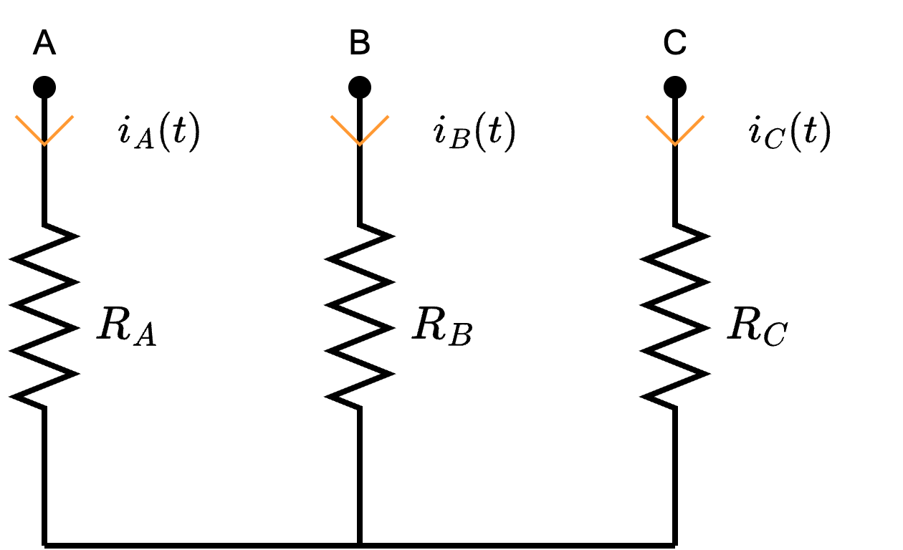
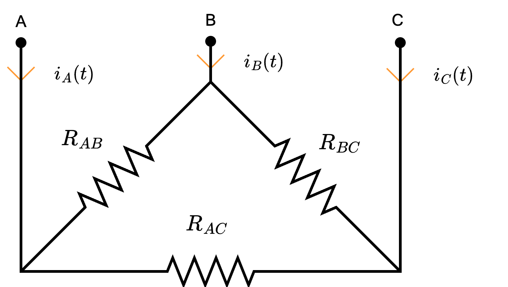
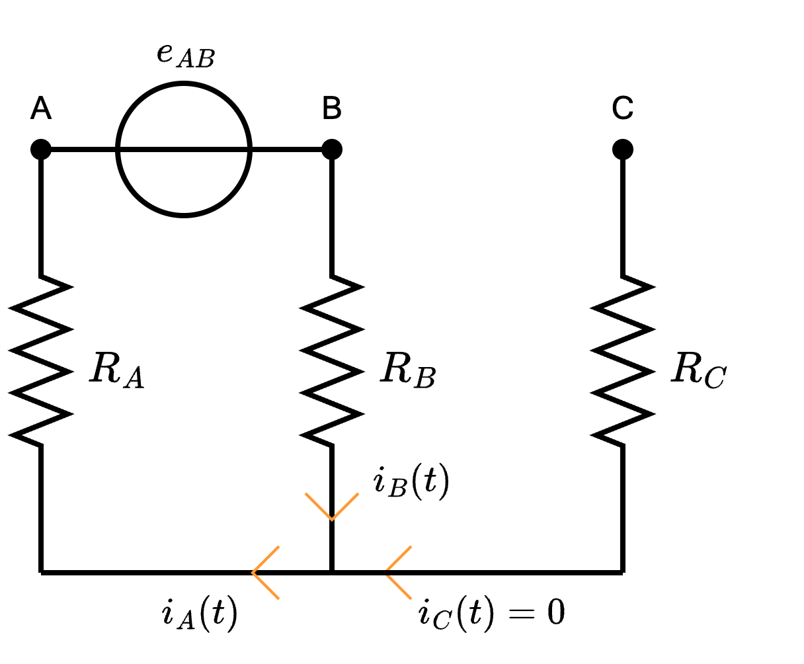
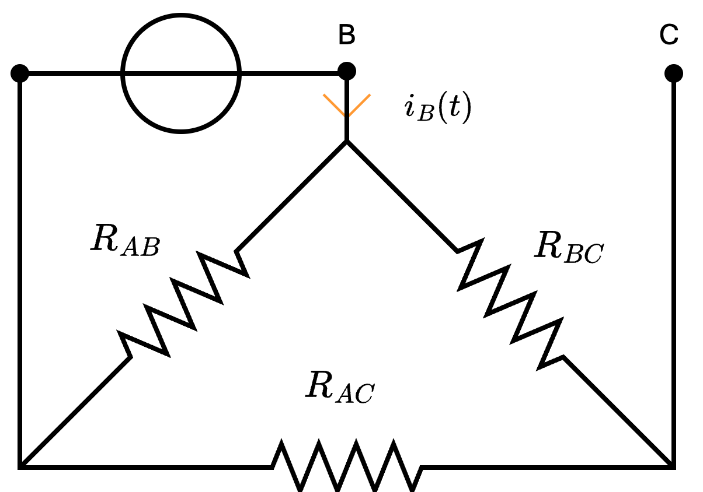

Definizione - Resistenza in serie ad un circuito aperto
Considerando un tratto di circuito composto da una resistenza \( R_S\) in serie ad un circuito aperto, si ha che è equivalente ad un circuito aperto
in quanto la resistenza equivalente avrebbe valore tendente a \( +\infty\) (che corrisponde ad un circuito aperto).
Definizione - Resistenza in parallelo ad un circuito aperto
Considerando un circuito composto da una resistenza \( R_P\) in parallelo ad un circuito aperto, si ha che è equivalente alla sola resistenza \( R_P\)
in quanto si può pensare il circuito aperto come non esistente (dato che non presenta alcun componente).
Definizione - Resistenza in parallelo ad un cortocircuito
Considerando un circuito composto da una resistenza \( R_P\) in parallelo ad un cortocircuito, si ha che è equivalente ad un cortocircuito
in quanto la resistenza equivalente sarebbe calcolabile come \[ R_{eq} = \frac{R_P \cdot 0}{R_P + 0} = 0 \mathrm{ \, \Omega } \] che equivale ad un cortocircuito.
Dimostrazione - Equivalenza di circuiti in configurazione a stella e a triangolo
Data la proposizione
Enunciato:
Considerando la configurazione circuitale a stella e la configurazione circuitale a triangolo si ha che è possibile trovare una relazione tra le resistenze al fine di ottenere le correnti \( i_A\), \( i_B\) e \( i_C\) equivalenti.


Formule di conversione da config. a triangolo a config. a stella
Considerando di voler passare da un circuito con una configurazione a triangolo ad uno con una configurazione a stella, si hanno le seguenti formule \[ \begin{array}{ccl} R_A & = & \frac{R_{AB} \cdot R_{CA}}{R_{AB} + R_{BC} + R_{AC}} \\ R_B & = & \frac{R_{AB} \cdot R_{BC}}{R_{AB} + R_{BC} + R_{AC}} \\ R_C & = & \frac{R_{AC} \cdot R_{BC}}{R_{AB} + R_{BC} + R_{AC}} \end{array} \]Formule di conversione da config. a stella a config. a triangolo
Considerando di voler passare da un circuito con una configurazione a stella ad uno con una configurazione a triangolo, si hanno le seguenti formule \[ \begin{array}{ccl} R_{AB} & = & \frac{R_A \cdot R_B + R_B \cdot R_C + R_A \cdot R_C}{R_C} \\ R_{BC} & = & \frac{R_A \cdot R_B + R_B \cdot R_C + R_A \cdot R_C}{R_A} \\ R_{AC} & = & \frac{R_A \cdot R_B + R_B \cdot R_C + R_A \cdot R_C}{R_B} \end{array} \]Dimostrazione:
Per dimostrare questa proposizione, consideriamo la configurazione a stella e, ipotizzando una configurazione più semplice, poniamo un generatore di tensione tra A e B, ovvero In questo caso, si ha che la corrente \( i_C\) è nulla (dato che in \( C\) vi è un circuito aperto) mentre è possibile notare che le resistenze \( R_A\) e \( R_B\) sono collegate in serie. Considerato ciò, si ha che la resistenza equivalente sarebbe uguale a \[ R_{eq} = R_A + R_B \] Applicando inoltre LKC al nodo, si ha che è possibile dedurre \[ i_A = i_B \] Per calcolare questo valore, è ora possibile calcolare \[ i_A = i_B = \frac{e_{AB}}{R_A + R_B} \] Considerando ora la configurazione a triangolo e, ipotizzando sempre di porre un generatore tra i morsetti A e B, ovvero È possibile notare che le resistenze \( R_{BC}\) e \( R_{CA}\) sono in serie, che a loro volta sono in parallelo ad \( R_{AB}\) portando alla resistenza equivalente \[ R_{eq} = R_{AB} \ // \ (R_{BC} + R_{CA}) \] Calcolando \( i_B\) si ha che \[ i_B = \frac{e_{AB}}{R_{AB} \ // \ (R_{BC} + R_{CA})} \] Confrontando le due formule, è possibile ottenere l'uguaglianza \[ \frac{e_{AB}}{R_A + R_B} = \frac{e_{AB}}{R_{AB} \ // \ (R_{BC} + R_{CA})} \] e, dato che \( e_{AB}\) è un valore arbitrario che possiamo imporre uguale, si ha che vale \[ R_A + R_B = R_{AB} \ // \ (R_{BC} + R_{CA}) \] Al fine di creare un sistema di 3 equazione e 3 incognite, è possibile procedere con lo stesso ragionamento per altre 2 volte, ponendo rispettivamente un generatore di tensione tra i nodi B e C ed i nodi A e C, ottenendo rispettivamente le seguenti equazioni \[ R_B + R_C = R_{BC} \ // \ (R_{AB} + R_{AC}) \] e \[ R_A + R_C = R_{AC} \ // \ (R_{AB} + R_{BC}) \] Risolvendo il sistema ottenuto, è possibile ottenere le formule. Si è quindi dimostrata la proposizione.

